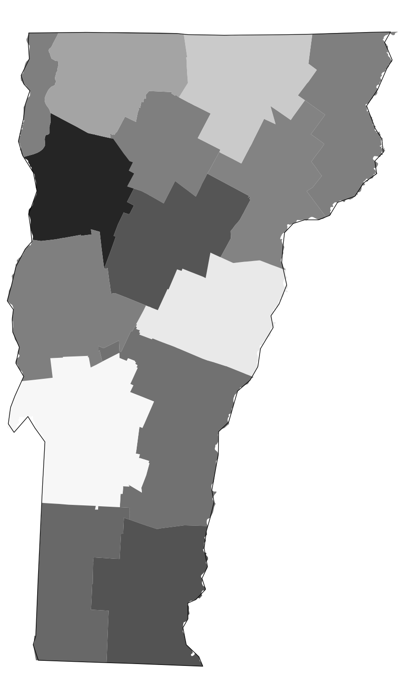
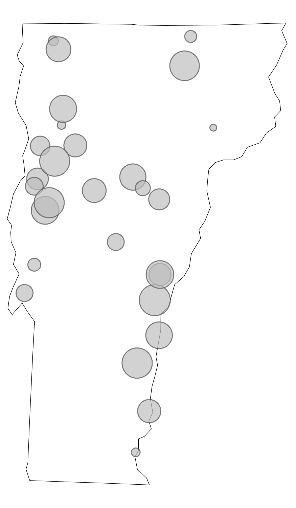
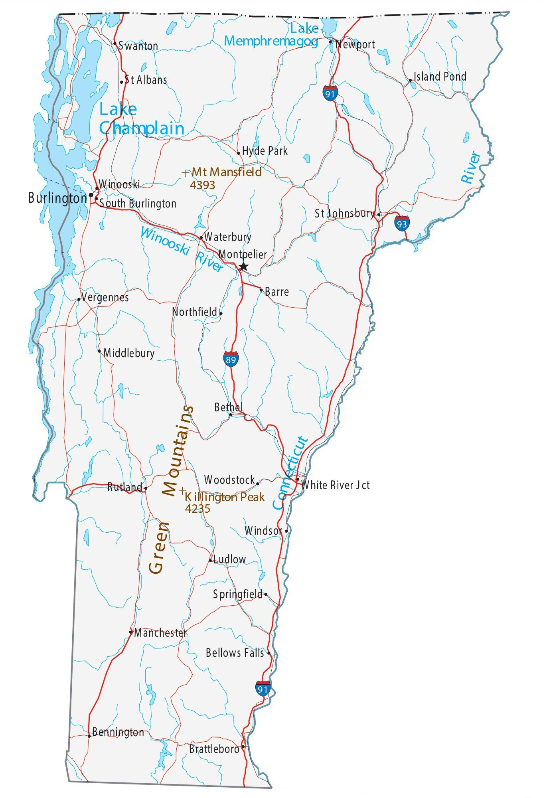

library(tidyverse)
library(sf)
library(tigris)
options(tigris_use_cache = TRUE)Introduction to Maps
USDA AMS/AAEA GSS Local Food Economics Data Visualization Challenge
Andrew Van Leuven | University of Vermont
June 4, 2026
Agenda
- Mapping basics
- Mapping in ggplot2
- Data from Census and NASS QuickStats
- Point data and basic GIS operations
Packages We’ll Use Today
install.packages(c(
"tidyverse", # data manipulation + ggplot2
"sf", # spatial data in R
"tigris", # US Census boundary files
"tidycensus", # Census + ACS data with geometry
"rnassqs", # NASS QuickStats API
"mapgl", # interactive web maps
"classInt", # natural breaks for color scales
"RColorBrewer" # color palettes
))Part 1: Mapping Basics
What Is GIS?
Geographic Information Systems = data + location
- Any dataset with a spatial component can be put on a map
- Agriculture is inherently spatial: counties, farms, markets, watersheds, supply chains
- Maps reveal patterns that tables and charts simply cannot
Today’s goal: get you from zero to a working map pipeline in R
Types of Spatial Data
Vector data (what we’ll use today)
| Type | Examples |
|---|---|
| Points | farmers markets, food hubs, farms |
| Lines | roads, rivers, rail corridors |
| Polygons | counties, states, ZIP codes |
Raster data (not today)
- A grid of cells, like a photo
- Elevation, land cover, satellite imagery
- Temperature, precipitation, and other climate variables
- Handled in R via
terra/stars
What Lives in an sf Object?
An sf data frame is just a regular data frame with one extra column: geometry
Simple feature collection with 3,234 features
Geometry type: MULTIPOLYGON
CRS: NAD83 (EPSG:4269)
GEOID NAME STATEFP ALAND geometry
1 01001 Autauga 01 1539602840 MULTIPOLYGON(...)
2 01003 Baldwin 01 4117521611 MULTIPOLYGON(...)
3 01005 Barbour 01 2291820706 MULTIPOLYGON(...)The geometry column is a list of all the coordinate pairs (longitude, latitude) that define each shape. For a polygon, it’s every vertex. For a point, it’s just one.
Coordinate Reference Systems
The earth is round. Maps are flat. Something has to give.
A CRS defines how 3D coordinates get projected onto a 2D surface.
Two CRS you’ll use constantly:
| CRS | EPSG | When you’ll see it |
|---|---|---|
| WGS84 | 4326 | GPS coordinates, GeoJSON files, web APIs, mapgl |
| Albers Equal Area | 5070 | Thematic maps in ggplot2 |
Rule of thumb: store and share data in 4326. Project to 5070 for any static map of the contiguous US.
Why Projections Matter

“Comparison of tangent and secant cylindrical, conic and azimuthal map projections” by cmglee et al., CC BY-SA 4.0, via Wikimedia Commons
Types of Maps



Choropleth — areas shaded by value
Dot map — one dot per unit
Proportional symbol — symbol size = quantity
Reference — orientation / context
Part 2: Mapping in ggplot2
The Building Blocks
sf: spatial data as a data frame with a geometry columntigris: US Census TIGER/Line boundaries, directly into R
Getting Boundary Data
cb = TRUE: simplified cartographic boundary (better for maps)resolution = "20m": 1:20,000,000 scale (right for national maps)- The filter removes Alaska, Hawaii, and territories
Your First Map
geom_sf() reads the geometry column and draws the shapes. That’s all there is to it.
But it looks weird – flat, stretched east-west. Let’s fix that.
Applying a Projection
coord_sf() reprojects the visualization without modifying your data.
This single line is the most impactful improvement you can make to a US national map.
Styling
theme_void() removes axes, gridlines, and background – almost always the right choice for a finished map.
Real Data: LACE
New from the Census Bureau: county-level estimates of households without air conditioning.
This is the standard workflow: get boundaries from tigris, join your data on GEOID, map it.
Building the Map Incrementally
ggplot(lace_map) +
geom_sf(aes(fill = NO_AC_PE), color = NA) +
# geom_sf(data = states_sf, fill = NA, color = "black", linewidth = 0.1) +
# coord_sf(crs = 5070) +
# scale_fill_distiller(palette = "YlGn", direction = 1,
# labels = percent, name = 'Share without A/C') +
theme_void() +
# theme(legend.position = 'bottom',
# plot.title = element_text(face = 'bold', hjust = .5)) +
labs(
# title = "Households without Air Conditioning by County (2023)"
)Color Scale Options
# Sequential (one hue, light to dark)
scale_fill_distiller(palette = "YlGn", direction = 1)
scale_fill_viridis_c(option = "rocket")
# Diverging (two hues meeting at a midpoint -- use when 0 means something)
scale_fill_distiller(palette = "RdBu", direction = 1)
# Right-skewed data: log-transform the scale
scale_fill_viridis_c(trans = "log10", labels = scales::comma)Avoid rainbow palettes (
rainbow(),jet). They are not perceptually uniform and create false visual boundaries in your data.
Part 3: Census and NASS Data
tidycensus
tidycensus pulls Census Bureau data directly into R, with geometry attached if you want it.
Covers: Decennial Census, ACS 1-year and 5-year, and more
Finding Variables
There are ~27,000 ACS 5-year variables. load_variables() + str_detect() is how you find what you need.
Pulling SNAP Data with Geometry
snap_households <- get_acs(
geography = "county",
variables = c(snap = "B22003_002",
total = "B22003_001"),
year = 2022,
geometry = TRUE # returns sf object -- no joining needed
) |>
select(GEOID, NAME, variable, estimate) |>
pivot_wider(names_from = variable, values_from = estimate) |>
mutate(snap_pct = snap / total) |>
filter(!str_starts(GEOID, "02|15|72"))geometry = TRUE is the killer feature: one call returns data and boundaries together.
SNAP Participation by County
ggplot(snap_households) +
geom_sf(aes(fill = snap_pct), color = NA) +
geom_sf(data = states_sf, fill = NA, color = "white", linewidth = 0.4) +
coord_sf(crs = 5070) +
scale_fill_viridis_c(
name = "Share of households receiving SNAP",
labels = percent_format(accuracy = 1),
option = "rocket", direction = 1
) +
theme_void(base_family = 'Verdana') +
theme(legend.position = 'bottom',
legend.title = element_text(face = 'bold', hjust = .5),
plot.title = element_text(face = 'bold', hjust = .5)) +
guides(fill = guide_colourbar(barheight = 0.35, barwidth = 15, title.position = 'top')) +
labs(title = "SNAP Participation by County",
subtitle = "2018-2022 5-year ACS Estimates")Going Smaller: Census Tracts
Change geography = "county" to geography = "tract" and add a state argument:
get_acs(
geography = "tract",
state = 'RI',
variables = c(snap = "B22003_002", total = "B22003_001"),
year = 2024,
geometry = TRUE
) |>
select(GEOID, NAME, variable, estimate) |>
pivot_wider(names_from = variable, values_from = estimate) |>
mutate(snap_pct = snap / total) |>
ggplot() +
geom_sf(aes(fill = snap_pct), color = NA) +
scale_fill_viridis_c(option = "A", direction = -1,
labels = percent_format(accuracy = 1),
na.value = 'grey90') +
theme_void() +
labs(title = "SNAP Participation by Census Tract, Rhode Island")NASS QuickStats: rnassqs
NASS QuickStats is USDA’s public database: crops, livestock, farm economics, farm counts, and more.
Tip: prototype your query at quickstats.nass.usda.gov first to get the exact parameter names and verify your record count before calling the API.
Querying NASS: Corn and Soybeans
corn_acres <- nassqs(
commodity_desc = "CORN",
short_desc = "CORN - ACRES PLANTED",
domain_desc = "TOTAL",
agg_level_desc = "COUNTY",
year = 2015
) |>
mutate(GEOID = paste0(state_fips_code, county_code)) |>
select(GEOID, year, corn_acres_planted = Value)
corn_acres_sf <- left_join(counties_sf, corn_acres)Same pattern for soybeans. Value comes back as a character with commas – handle that in the color scale or with as.numeric(str_remove_all(Value, ",")).
Finding Better Breaks: Jenks
Right-skewed ag data will look like one color if you use a linear scale. Jenks natural breaks fix that.
library(classInt)
corn_vals <- as.numeric(str_remove_all(corn_acres_sf$corn_acres_planted, ","))
soy_vals <- as.numeric(str_remove_all(soybean_acres_sf$soybean_acres_planted, ","))
combined <- c(corn_vals, soy_vals)
brks <- classIntervals(
combined[!is.na(combined) & combined > 0],
n = 5, style = "jenks"
)$brks |> round(-3)
pal <- RColorBrewer::brewer.pal(length(brks), "YlGnBu")Using the combined distribution ensures both maps share the same color scale.
Comparing Maps with compare()
left_map <- maplibre(bounds = states_sf, style = carto_style("voyager")) |>
add_fill_layer(id = "corn_acres", source = corn_acres_sf,
fill_color = interpolate(column = "corn_acres_planted",
values = brks, stops = pal, na_color = "lightgrey"),
fill_opacity = 0.9, tooltip = "corn_acres_planted") |>
add_line_layer(id = 'states', source = states_sf, line_width = .1) |>
add_continuous_legend("Corn Acres Planted, 2015",
values = brks, colors = pal, position = "bottom-left", draggable = TRUE)
right_map <- maplibre(bounds = states_sf, style = carto_style("voyager")) |>
add_fill_layer(id = "soybean_acres", source = soybean_acres_sf,
fill_color = interpolate(column = "soybean_acres_planted",
values = brks, stops = pal, na_color = "lightgrey"),
fill_opacity = 0.9, tooltip = "soybean_acres_planted") |>
add_line_layer(id = 'states', source = states_sf, line_width = .1) |>
add_continuous_legend("Soybean Acres Planted, 2015",
values = brks, colors = pal, position = "bottom-left", draggable = TRUE)
compare(left_map, right_map)Part 4: Point Data and GIS
From Table to Map
Any table with latitude and longitude columns can become a spatial dataset.
st_as_sf() turns the lat/lon columns into a geometry column. After that, it’s a normal sf object.
USDA Inspection Establishments
lower48_usda <- st_intersection(
usda_inspection_estabs_sf,
st_transform(states_sf, 5070)
) |>
filter(size %in% c('Large', 'Small', 'Very Small'))
ggplot() +
geom_sf(data = st_transform(states_sf, 5070),
color = 'black', linewidth = .25) +
geom_sf(data = lower48_usda,
aes(color = size), size = 1, alpha = .7) +
scale_color_manual(values = c('#e41a1c', '#e6ab02', '#377eb8'),
name = 'Size') +
theme_void() +
labs(title = "USDA Meat, Poultry & Egg Product Inspection",
subtitle = "Establishments by Size Class")Categorical Point Maps with mapgl
Color points by category using match_expr():
gas_stations <- read_csv('data/gas_stations.csv') |>
st_as_sf(wkt = "geometry_wkt", crs = 4326) |>
st_transform(crs = 5070)
mapboxgl(style = mapbox_style("light"), bounds = states_sf) |>
add_circle_layer(
id = "poi-gas", source = gas_stations,
circle_color = match_expr(
"name",
values = c("Casey's General Store", "Cenex", "Kwik Trip/Kwik Star"),
stops = c("#F3D317", "#8a0000", "#0300ad")
),
circle_radius = 4, circle_stroke_color = "#ffffff",
circle_stroke_width = .4, circle_opacity = 0.7, tooltip = "city_name"
) |>
add_categorical_legend(
legend_title = "Midwest Gas Station Chains",
values = c("Casey's General Store", "Cenex", "Kwik Trip/Kwik Star"),
colors = c("#F3D317", "#8a0000", "#0300ad"),
patch_shape = "circle", position = "bottom-left",
layer_id = "poi-gas", interactive = TRUE
)st_intersection: Counting Points in Polygons
One of the most useful GIS operations: assign each point to the polygon it falls in, then aggregate.
county_pop_2020 <- get_decennial(geography = 'county', variables = 'P1_001N',
year = 2020, geometry = TRUE) |>
st_transform(5070) |>
filter(!str_starts(GEOID, "02|15|72")) |>
select(cty_fips = GEOID, pop20 = value)
dollar_stores_by_county <- st_intersection(dollar_stores, county_pop_2020) |>
st_drop_geometry() |>
summarize(dollar_stores = n(), pop_2020 = first(pop20), .by = cty_fips) |>
replace_na(list(dollar_stores = 0)) |>
mutate(dollar_stores_per_capita = dollar_stores / pop_2020)Raw Counts vs Per Capita
Raw counts
Large counties always “win.”
Buffer Analysis: st_buffer
st_buffer() creates a polygon a fixed distance around each point.
The buffers show which areas of Iowa are within 10 miles of a dollar store – and where the gaps are.
From Dense Points to Heatmap
When points overlap too much to read, a heatmap reveals density patterns more clearly.
iowa_pts <- dollar_stores |>
filter(state == "IA") |>
st_transform(4326) |>
st_jitter(factor = 0.0001)
maplibre(style = maptiler_style("openstreetmap"),
bounds = filter(states_sf, STUSPS == 'IA')) |>
add_circle_layer(
id = "poi-dollar-store", source = iowa_pts,
circle_color = "red", circle_stroke_color = "white",
circle_stroke_width = 1
) |>
add_heatmap_layer(
id = "heatmap", source = iowa_pts,
heatmap_radius = 25,
heatmap_color = interpolate(
property = "heatmap-density",
values = seq(0, 1, 0.2),
stops = c("transparent", viridisLite::magma(5))
)
)More Things sf Can Do
st_distance() # distance between features (in CRS units)
st_nearest_feature() # index of the nearest feature in another layer
st_centroid() # geometric center of a polygon
st_area() # area of a polygon (in CRS units)
st_union() # merge / dissolve geometries into one
st_bbox() # bounding box of a layer
st_crop() # clip features to a rectangular extent
st_within() # is feature A fully inside feature B?
st_touches() # do features share a boundary?sf cheat sheet: rstudio.github.io/cheatsheets/sf.pdf
Wrap Up
What We Covered
- Mapping basics: vector data, coordinate reference systems, map types
- ggplot2 maps:
tigris,geom_sf(), projections, choropleths, LACE example - Census and NASS:
tidycensuswith geometry, census tracts,rnassqs, Jenks breaks,compare() - Point data and GIS:
st_as_sf(), categorical maps,st_intersection(), counts vs. rates, buffers, heatmaps
Thank You
Andrew Van Leuven University of Vermont
Questions?
Introduction to Maps | Andrew Van Leuven | UVM